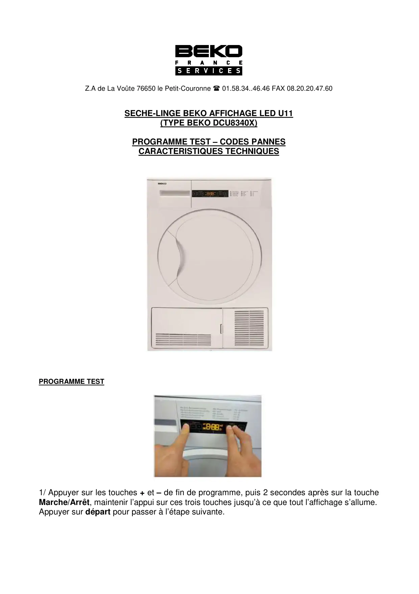
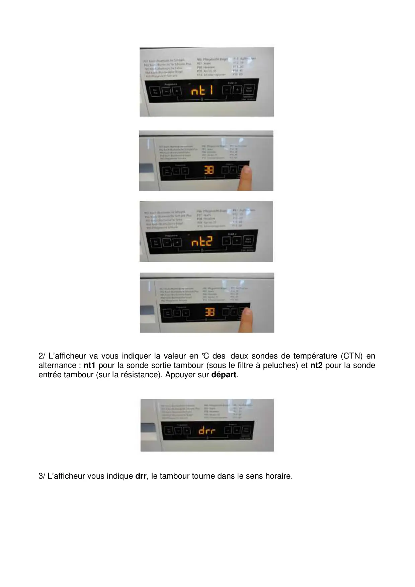
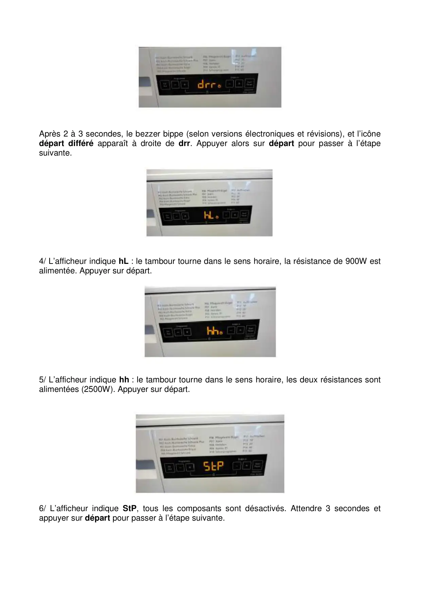
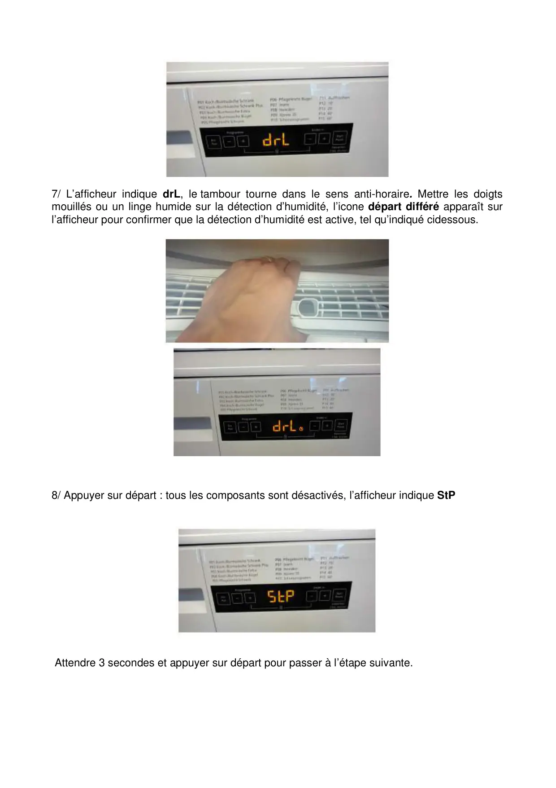
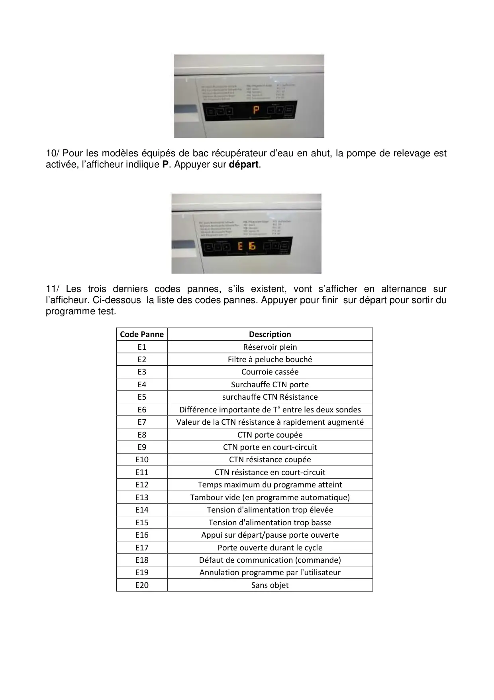
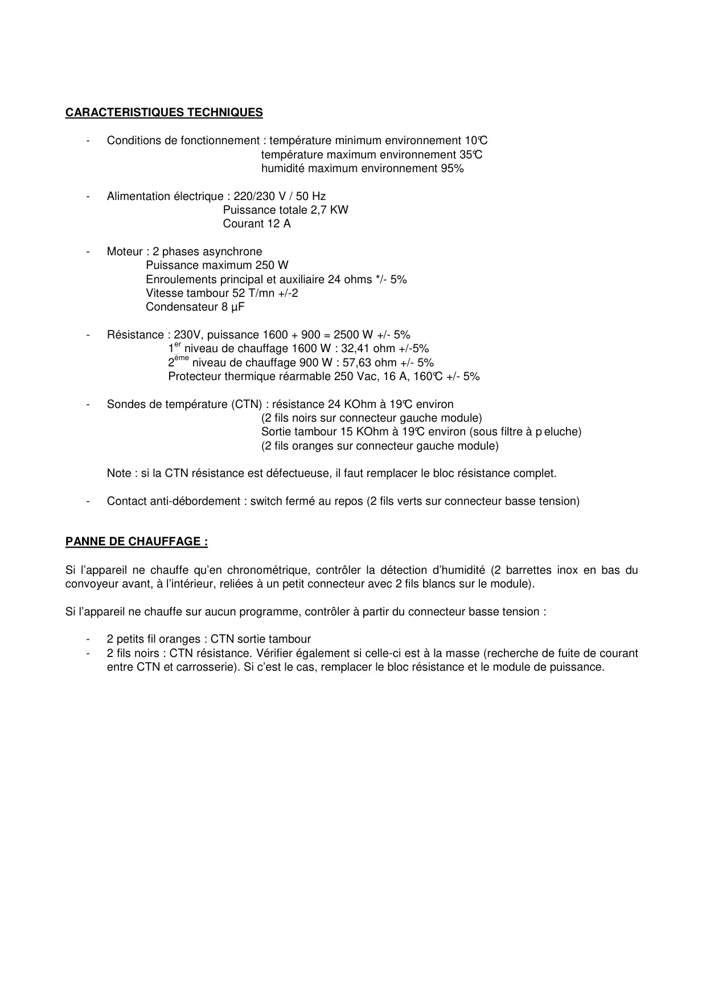

Progr.Test.F seche linge.U11 DCU8430x

Z.A de La Voûte 76650 le Petit-Couronne 01.58.34..46.46 FAX 08.20.20.47.60SECHE-LINGE BEKO AFFICHAGE LED U11(TYPE BEKO DCU8340X)PROGRAMME TEST – CODES PANNESCARACTERISTIQUES TECHNIQUESPROGRAMME TEST1/ Appuyer sur les touches + et – de fin de programme, puis 2 secondes après sur la toucheMarche/Arrêt, maintenir l’appui sur ces trois touches jusqu’à ce que tout l’affichage s’allume.Appuyer sur départ pour passer à l’étape suivante.
1 / 6
2/ L’afficheur va vous indiquer la valeur en °C des deux sondes de température (CTN) enalternance : nt1 pour la sonde sortie tambour (sous le filtre à peluches) et nt2 pour la sondeentrée tambour (sur la résistance). Appuyer sur départ.3/ L’afficheur vous indique drr, le tambour tourne dans le sens horaire.
2 / 6
Après 2 à 3 secondes, le bezzer bippe (selon versions électroniques et révisions), et l’icônedépart différé apparaît à droite de drr. Appuyer alors sur départ pour passer à l’étapesuivante.4/ L’afficheur indique hL : le tambour tourne dans le sens horaire, la résistance de 900W estalimentée. Appuyer sur départ.5/ L’afficheur indique hh : le tambour tourne dans le sens horaire, les deux résistances sontalimentées (2500W). Appuyer sur départ.6/ L’afficheur indique StP, tous les composants sont désactivés. Attendre 3 secondes etappuyer sur départ pour passer à l’étape suivante.
3 / 6
7/ L’afficheur indique drL, le tambour tourne dans le sens anti-horaire. Mettre les doigtsmouillés ou un linge humide sur la détection d’humidité, l’icone départ différé apparaît surl’afficheur pour confirmer que la détection d’humidité est active, tel qu’indiqué cidessous.8/ Appuyer sur départ : tous les composants sont désactivés, l’afficheur indique StPAttendre 3 secondes et appuyer sur départ pour passer à l’étape suivante.
4 / 6
10/ Pour les modèles équipés de bac récupérateur d’eau en ahut, la pompe de relevage estactivée, l’afficheur indiique P. Appuyer sur départ.11/ Les trois derniers codes pannes, s’ils existent, vont s’afficher en alternance surl’afficheur. Ci-dessous la liste des codes pannes. Appuyer pour finir sur départ pour sortir duprogramme test.Code PanneDescriptionE1Réservoir pleinE2Filtre à peluche bouchéE3Courroie casséeE4Surchauffe CTN porteE5surchauffe CTN RésistanceE6Différence importante de T° entre les deux sondesE7Valeur de la CTN résistance à rapidement augmentéE8CTN porte coupéeE9CTN porte en court-circuitE10CTN résistance coupéeE11CTN résistance en court-circuitE12Temps maximum du programme atteintE13Tambour vide (en programme automatique)E14Tension d'alimentation trop élevéeE15Tension d'alimentation trop basseE16Appui sur départ/pause porte ouverteE17Porte ouverte durant le cycleE18Défaut de communication (commande)E19Annulation programme par l'utilisateurE20Sans objet
5 / 6
CARACTERISTIQUES TECHNIQUES-Conditions de fonctionnement : température minimum environnement 10°Ctempérature maximum environnement 35°Chumidité maximum environnement 95%-Alimentation électrique : 220/230 V / 50 HzPuissance totale 2,7 KWCourant 12 A-Moteur : 2 phases asynchronePuissance maximum 250 WEnroulements principal et auxiliaire 24 ohms */- 5%Vitesse tambour 52 T/mn +/-2Condensateur 8 µF-Résistance : 230V, puissance 1600 + 900 = 2500 W +/- 5%1er niveau de chauffage 1600 W : 32,41 ohm +/-5%2ème niveau de chauffage 900 W : 57,63 ohm +/- 5%Protecteur thermique réarmable 250 Vac, 16 A, 160°C +/- 5%-Sondes de température (CTN) : résistance 24 KOhm à 19°C environ(2 fils noirs sur connecteur gauche module)Sortie tambour 15 KOhm à 19°C environ (sous filtre à p eluche)(2 fils oranges sur connecteur gauche module)Note : si la CTN résistance est défectueuse, il faut remplacer le bloc résistance complet.-Contact anti-débordement : switch fermé au repos (2 fils verts sur connecteur basse tension)PANNE DE CHAUFFAGE :Si l’appareil ne chauffe qu’en chronométrique, contrôler la détection d’humidité (2 barrettes inox en bas duconvoyeur avant, à l’intérieur, reliées à un petit connecteur avec 2 fils blancs sur le module).Si l’appareil ne chauffe sur aucun programme, contrôler à partir du connecteur basse tension :-2 petits fil oranges : CTN sortie tambour-2 fils noirs : CTN résistance. Vérifier également si celle-ci est à la masse (recherche de fuite de courantentre CTN et carrosserie). Si c’est le cas, remplacer le bloc résistance et le module de puissance.
6 / 6